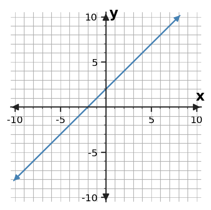

A function gives each input one clear destination.
Section Introduction
Follow what goes in and what comes out
Many algebra relationships can be read like a machine: choose an input, apply a rule, and get an output. Tables and mappings make those pairings visible without hiding the order.
A function adds one important restriction: each input may have only one output. Different inputs are allowed to share an output; the problem occurs only when the same input points to two different outputs.
Track the input first; then ask where it is allowed to go.
Vocabulary / Key Notation Preview
input · output · function · ordered pair · mapping
Sort the vocabulary. Write each vocabulary word in the column that best matches what you know right now. You may move a word later.
| Know for sure | Recognize | Don't know yet |
|---|---|---|
Section Preview
Skim before close reading. Look at the headings, tables, graphs, and examples. Find 1–2 things you notice and 1–2 things you wonder about.
| What I noticed | |
|---|---|
| What I wonder |
Close Reading Directions
READ IN SHORT CHUNKS. Annotate the words and visuals together. Underline evidence, circle or highlight bold vocabulary, label arrows or important features, connect sentences to tables and graphs, and jot short questions or connections in the margins. Use these directions through the What's To Come section and the reading that follows.
What's To Come
PREVIEW / DECOMPOSE. Use the connected parts to see where this section is headed. Annotate the representations and prompts as you work.
A game score machine uses the rule \(S=2r+4\), where \(r\) is the round number and \(S\) is the score shown. Use this one machine for Parts A–D.
Part A
Identify the input quantity and the output quantity.
Part B
Find the outputs for inputs 0, 2, and 5.
Part C
Write the three input-output results as ordered pairs.
Part D
Explain why this rule defines a function.
Answer: A: input r (round); output S (score). B: 4, 8, 14. C: (0,4), (2,8), (5,14). D: every chosen r gives exactly one score.
Reasoning: The rule gives a single result for each input because the operations are fixed.
Teaching move / likely issue: If students say repeated outputs would break a function, give two different inputs that legitimately land on the same output in another mapping.
I Can 1Identify the input and output in a relationship.
The input is the value you start with; the output is the value the relationship produces. In a table, the input is often listed first. In a graph, input is usually read on the horizontal axis and output on the vertical axis.
Context tells you what the symbols mean. If \(d=5t\) describes distance after time, time is the input and distance is the output. Naming the quantities keeps the algebra connected to the situation.
Input: \(x=3\)
Rule: \(y=x+2\)
Output: \(y=5\)

Input is horizontal/x; output is vertical/y in the usual coordinate graph.
Example 1: Name the quantities
A parking meter uses \(C=1.5h+2\), where \(h\) is hours parked and \(C\) is cost in dollars. Identify the input and output, including units.
Answer: Input: hours parked h. Output: cost C in dollars.
Reasoning: The situation chooses a number of hours first; the rule then produces the cost.
Teaching move / likely issue: Require quantities, not only the letters.
You Try It 1: Follow another relationship
A temperature table lists time in minutes in the first column and water temperature in °C in the second. Which quantity is the input and which is the output? Explain using the experiment.
Answer: Input: time in minutes. Output: water temperature in °C.
Reasoning: Measurements are recorded as time advances, so each selected time is paired with a measured temperature.
Teaching move / likely issue: Students may confuse “what I measure” with “what I enter”; use the table-column order plus context.
Stop and Discuss
- How can the context help you decide which variable is the input?
- On a usual coordinate graph, where do you read inputs and outputs?
I Can 2Use a rule to find outputs.
A rule is a set of operations that turns an input into an output. Substitute the input for the variable, then follow the operations accurately. Parentheses help keep a substituted negative number together.
You can use a rule repeatedly to fill a table. The same rule must be used for every row. If one output breaks the pattern, recompute that row before assuming the rule changed.
| Input x | Rule y=3x-2 | Output y |
|---|---|---|
| -1 | 3(-1)-2 | -5 |
| 0 | 3(0)-2 | -2 |
| 2 | 3(2)-2 | 4 |
Substitute first, then calculate.
Example 2: Find outputs
Use \(y=4x+1\) to complete the output column.
| x | y |
|---|---|
| -2 | |
| 0 | |
| 3 |
Answer: Outputs: -7, 1, 13.
Reasoning: Evaluate 4x+1 at each listed input.
Teaching move / likely issue: For x=-2, look for the common error 4-2+1 instead of 4(-2)+1.
You Try It 2: Use a different rule
Use \(p=10-2n\) to complete the output column.
| n | p |
|---|---|
| -1 | |
| 2 | |
| 6 |
Answer: Outputs: 12, 6, -2.
Reasoning: Substitute each n into 10-2n.
Teaching move / likely issue: The negative input produces 10-2(-1)=12; check sign handling.
Stop and Discuss
- Why are parentheses useful when the input is negative?
- How can a completed table help you catch a calculation that does not fit the rule?
I Can 3Write ordered pairs from inputs and outputs.
An ordered pair records one input-output match as \((input,output)\). If a table row has input 2 and output 7, the ordered pair is \((2,7)\).
Order matters because \((2,7)\) and \((7,2)\) describe different matches. Ordered pairs also connect directly to graph points: the first coordinate tells the horizontal move and the second tells the vertical move.
| Input | Output | Ordered pair |
|---|---|---|
| -2 | 5 | (-2,5) |
| 0 | 1 | (0,1) |
| 3 | -5 | (3,-5) |
Keep the input first every time.
Example 3: Write the pairs
Write each row as an ordered pair.
| Input | Output |
|---|---|
| -3 | 8 |
| 1 | 0 |
| 4 | -6 |
Answer: (-3,8), (1,0), (4,-6).
Reasoning: Copy each row in input-output order.
Teaching move / likely issue: Watch for students sorting numbers from least to greatest instead of preserving roles.
You Try It 3: Build pairs from a rule
For the rule \(y=2x-4\), use inputs 0, 3, and 5. Find the outputs and write the three ordered pairs.
Answer: (0,-4), (3,2), (5,6).
Reasoning: Evaluate the rule for each input and record (x,y).
Teaching move / likely issue: Check that students do not write (output,input).
Stop and Discuss
- What does the first coordinate of an ordered pair tell you?
- How does an ordered pair connect a table row to a graph point?
I Can 4Decide whether each input has only one output.
A function is a relationship in which each input has only one output. A mapping diagram can make that test easy: start at each input and count how many arrows leave it.
Repeated outputs are allowed. Two different inputs can point to the same output and still form a function. A relationship fails the function test only when one input is paired with two different outputs.
Shared outputs are okay; split outputs from the same input are not.
Example 4: Read a mapping
Decide whether the mapping is a function. Explain using the arrows from each input.
Answer: Yes, it is a function.
Reasoning: Each input has exactly one outgoing arrow; inputs 1 and 2 sharing output 5 is allowed.
Teaching move / likely issue: Listen for “outputs repeat, so not a function”—that is the target misconception.
You Try It 4: Find the input that breaks the rule
Decide whether the mapping is a function. If not, identify the input that causes the problem.
Answer: No. Input 2 causes the problem.
Reasoning: Input 2 points to both 6 and 8, so it has more than one output.
Teaching move / likely issue: Have students trace arrows from inputs, not count repeated values on the output side.
Stop and Discuss
- Why can two different inputs share an output in a function?
- What exactly should you inspect first in a mapping diagram?
Vocabulary Reference
| Term | Meaning in this section |
|---|---|
| input | The starting value in a relationship. |
| output | The value produced from an input. |
| function | A relationship in which every input has exactly one output. |
| ordered pair | A matched input and output written in order, usually \((x,y)\). |
| mapping | A diagram that uses arrows to show which inputs are paired with which outputs. |
Section Summary
- Input is the starting quantity; output is the result.
- A rule can be evaluated repeatedly to build input-output pairs.
- Ordered pairs preserve input first and output second.
- A function gives each input exactly one output; repeated outputs are allowed.
What I Understand Now
Describe the function test in your own words. Then explain how you would check a table, an ordered-pair list, or a mapping diagram for the same idea.
Common Mistakes to Watch
| Mistake | What to remember |
|---|---|
| Reversing inputs and outputs | Keep input/x first and output/y second. |
| Thinking repeated outputs break a function | Different inputs may share one output. |
| Missing a repeated input | Check whether the same input is paired with two different outputs. |
| Dropping a negative sign in a rule | Use parentheses when substituting negative inputs. |